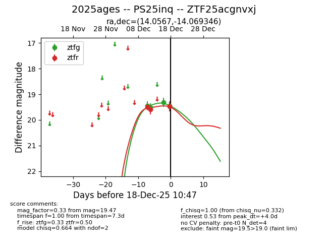
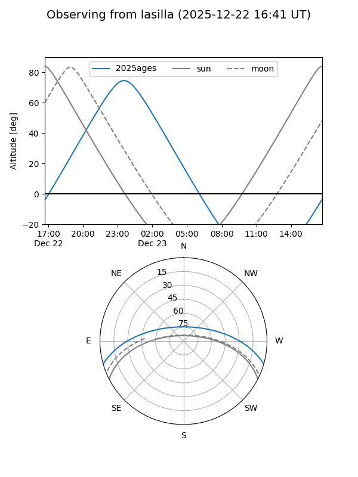
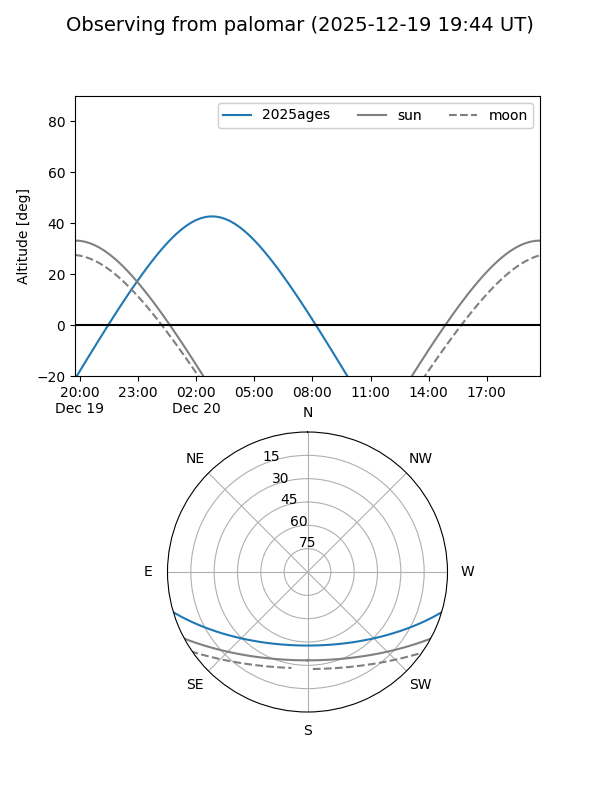
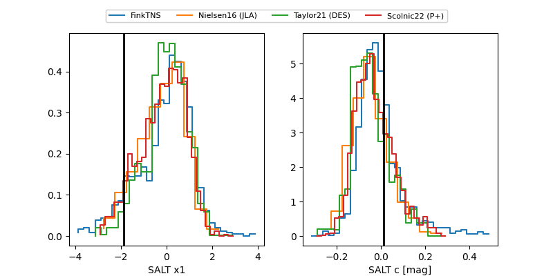

2025ages
Target 2025ages at 2025-12-22 14:03
Aliases and brokers:
FINK: fink-portal.org/ZTF25acgnvxj
Lasair: lasair-ztf.lsst.ac.uk/objects/ZTF25acgnvxj
ALeRCE: alerce.online/object/ZTF25acgnvxj
TNS: wis-tns.org/object/2025ages
YSE: ziggy.ucolick.org/yse/transient_detail/2025ages
alt names
ZTF25acgnvxj (ztf,fink_ztf)
2025ages (tns,yse)
PS25inq (panstarrs)
Coordinates:
equatorial (ra, dec) = 14.0567,-14.06935
equatorial (HMS+DMS) = 00:56:13.60,-14:04:09.64
galactic (l, b) = (128.0594,-76.89339)
Flags:
Photometry:
last ztfg=19.47, ztfr=19.39
6 ztfg, 4 ztfr detections
Lightcurve

Visibility


Additional plots
